From Stone to Metal
From Stone to Metal
21
21
21
The age that used the tools, implements and weapons with
the features discussed above is called the Neolithic Age (New
Stone Age). In this period drastic transformations occured in
human life.
The pictures given below signify those changes.
From the pictures, what features can you identify about the
human life in the Neolithic Age?
•
Engaged in farming
•
Developed shelters
•
Tamed animals
•
•
In what ways does the Neolithic Age differ from the
Palaeolithic Age?
Human life in the Neolithic Age - An illustration
Page 21

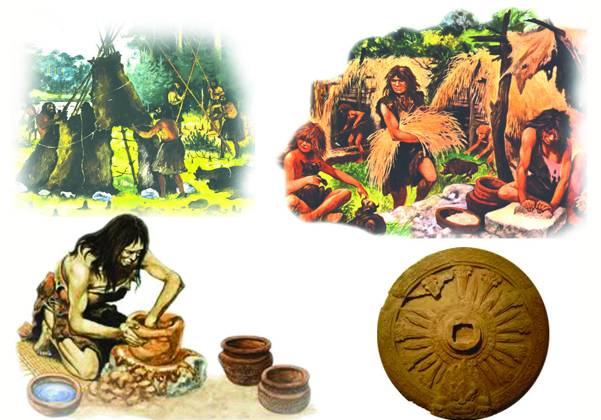
Page 22
2222
22
Social Science V
Social Science V
Bronze Age
Later copper tools began to be used along with stone tools.
Compared to stones, copper was easier to sharpen and mould
and was convenient to use. The period when man used both
stone and copper tools is known as Chalcolithic Age (Copper-
stone Age).
In course of time, man discovered tin and learned to mix
copper with tin to produce the alloy called bronze, which was
harder than copper.
The age in which bronze was widely used to make weapons
and tools is called 'Bronze Age'.
Complete the folowing flow chart related to ancient human
life.
Chalcolithic Age
Palaeolithic Age
Let us find out the changes brought about in human life by
the invention and use of bronze weapons and tools.
During this period agriculture improved and resulted in better
harvest. The fertile soil of the river valleys and ample irrigation
also helped in improving agriculture.
Page 23
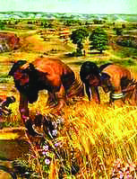
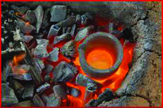
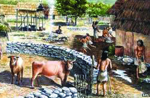
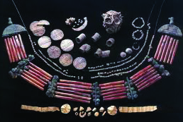
From Stone to Metal
From Stone to Metal
23
23
23
What changes might have
been brought about by the
improvement in agriculture?
•
The storage of surplus
food grains.
•
Development of public
places for the exchange of
agricultural products
•
Increase in the production
and
use
of
new
agricultural tools.
Ancient farming - An illustration
What other occupational fields might have developed along
with agriculture? Find them from the pictures given below.
Page 24
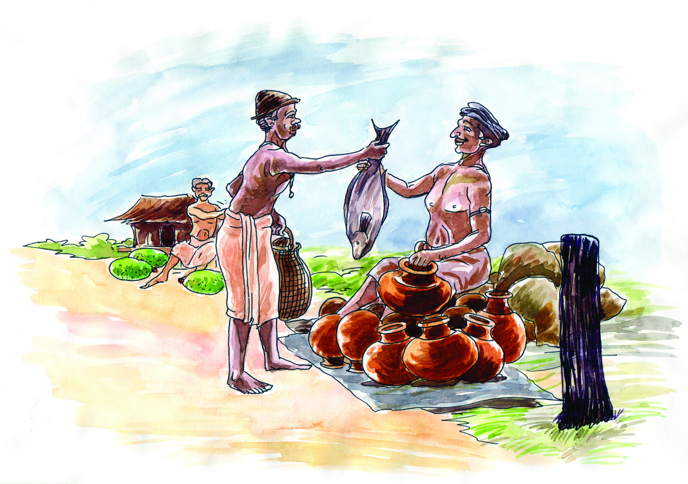
2424
24
Social Science V
Social Science V
Exchange of goods - An illustration
In addition to the ones you have found out, the following
occupational fields also developed during that period.
•
Brick making
•
Weaving
Those who were engaged in a particular occupation needed
the goods produced by others. This necessitated the exchange
of goods and it created a sense of mutual dependance among
people. Surplus products were exported to far off places. As
a result, both inland and maritime trade flourished.
Consequently, means of transportation also developed. In
course of time, systems of administration were formed to
regulate these activities. The invention of the art of writing
was another striking feature of the Bronze Age.
With these features, ancient cities developed gradually in
various river valleys. These cities are regarded as the centres
of the Bronze Age civilizations.
The Mesopotamian Civilization
The Mesopotamian Civilization flourished in the valleys
between the Euphrates and the Tigris rivers. The word
Page 25

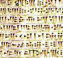
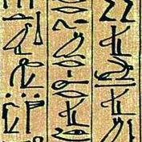
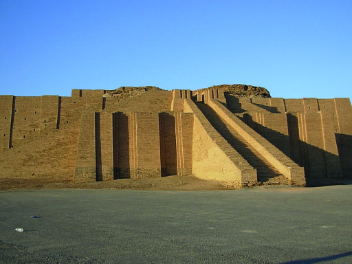
From Stone to Metal
From Stone to Metal
25
25
25
'Mesopotamia' means 'the land between rivers'. It is now in
Iraq. The Cuneiform script evolved in Mesopotamia. The
'Ziggurats' are the major remains of this great civilization.
The Egyptian Civilization
The Egytian civilization flourished in the valley of the river
Nile. Egypt is called 'the Gift of the Nile'. The Hieroglyphic
script was developed in Egypt. The world famous pyramids
are the most remarkable remains of this civilization.
Hieroglyphics
It is the script used by ancient Egyptians.
It is a combination of symbols and letters
commonly written on papyrus and wood.
Cuneiform Script
The Cuneiform is one of the oldest known
scripts. It was developed in the region of
Sumer. The script is represented by wedge-
shaped pictograhic marks on clay tablets.
Ziggurats
The Ziggurats were temple
complexes. The walls of the
Ziggurats were built of burnt
bricks. It has been found that
around twenty five Ziggurats were
built in this area. The Ziggurat
in the city of Ur is still preserved.
KT-129 / 3-Soc Science 5 (E)Vol - 1
Page 26
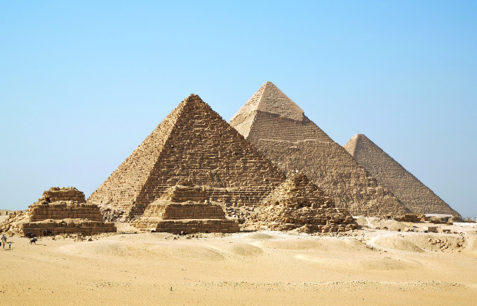
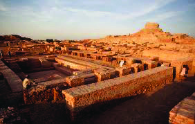
2626
26
Social Science V
Social Science V
The Chinese Civilization
The Chinese Civilization flourished in the
Hwang-Ho river valley. It is remarkable
that the Chinese pictographic script
formed in the Bronze Age exists even
today with some changes. The Chinese
were experts in making bronze sculptures.
The Harappan Civilization
The Harappan Civilization flourished in the valley of the river
Indus. The major sites of this civilization are situated in the
present India and Pakistan. Town planning was a striking
feature of the Harappan Civilization. The thoroughfares,
drainage system, granaries, trade centres, multi storeyed
houses made of burnt bricks, etc. astonish even the modern
world. The Harappan people were familiar with the art of
writing. Mohenjodaro, Harappa, Kalibangan, and Lothal were
the major cities of the Indus-Valley Civilization.
Chinese bronze sculpture
The Pyramids are the tombs of the
‘Pharaohs’, the rulers of Egypt.
The biggest pyramid is the one at
Giza, built by the Pharaoh of
Khufu.
Pyramids
The Great Bath
The Great Bath is one of the important
remains of the Harappan Civilization.
It is situated in Mohenjodaro.
Page 27


From Stone to Metal
From Stone to Metal
27
27
27
Human life underwent changes when it progressed
from the Neolithic Age to the Bronze Age. What are
they?
List out the tools, implements, utensils and weapons made of
stone, copper and bronze that can be found in your house and
premises.
Summary
•
The period in which rough stones were used as tools is
known as the Palaeolithic Age.
•
The period in which polished stones were used as tools is
known as the Neolithic Age.
•
Agriculture, domestication of animals and permanent
settlement began in the Neolithic Age.
•
River valley civilizations flourished in the Bronze Age.
•
The major civilizations during the Bronze Age were
Mesopotamian, Egyptian, Chinese and Harappan.
Significant learning outcomes
•
Describes the features of the Stone Age
•
Compares the Palaeolithic and the Neolithic Ages.
•
Identifies the major Bronze Age Civilizations and analyses
their remarkable features.
Let us assess
•
Compare and contrast the tools, implements and weapons
of the Palaeolithic Age with those of the Neolithic Age.
•
What were the changes brought about in the human life in
the Neolithic Age with the beginning of agriculture?
Page 28
2828
28
Social Science V
Social Science V
•
List out the various occupational fields developed in the
Bronze Age.
Extended activities
•
Collect pictures related to river valley civilizations and
prepare an album with proper descriptions.
•
Conduct a seminar on the topic 'Man's progress from the
Stone Age to the Metal Age civilizations'.
Page 29
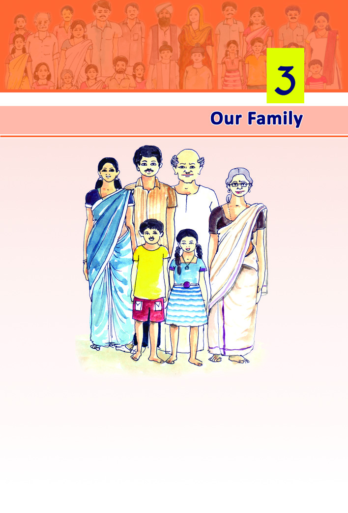
Our Family
29
29
Our Family
Look at this picture of a family. Can you identify the members?
•
•
•
•
•
•
Who are the members of your family?
• Mother
•
•
•
•
•
Page 30
Social Science V
30
30
Social Science V
Society
Community
Individuals
Families
A family consists of father, mother, children and their close
relatives. Every individual is a member of a family. When did
you become the member of your family? Of course, by birth.
Normally we live in a family from birth to death and so the
family influences us the most.
Is your's the only family in your locality? Of course, no.
Family is the smallest unit of a society. Several families together
form a community and several communities together give rise
to a society.
Family - the basic unit of society
It is our family that teaches us the social norms, manners and
the way of life for the first time. Family fulfills our basic needs
such as food, cloth, shelter etc. It ensures love and security to
all the members of the family. It is from the family that we
start making social relationships, develop and retain such
relations. That is why family is said to be the basic unit of
society.
Read the poem of Kunjunni Mash.
I am Kunjunni
My mother, Narayaniyamma;
Grandmother, Parukkuttiyamma.
Great, grandmother? - no idea!
So scarce is my knowledge about my family.
(Enniloode - Kunjunni Mash)
Page 31
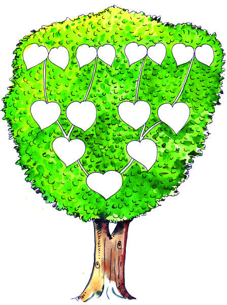
Our Family
31
31
Our Family
Haven't you noticed that in his poem, Kunjunni Mash could
name the members of his two previous generations but not
more than that? You know the names of your parents, but
how many of you can name your grandparents and great grand
parents? Try filling up the family tree given below, beginning
with your name in the lowest leaf.
Family Tree
Information about how many former generations are you able
to draw out in your family tree? Do all these people live
together?
Page 32
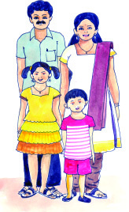
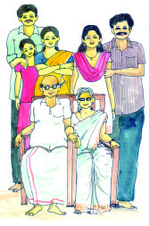
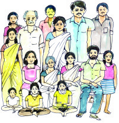
Social Science V
32
32
Social Science V
Formation of a family
We have seen that one becomes a member of a family by birth.
Family members are related by blood. One's relation to his
father, mother and siblings is by blood. People also become
relatives by marriage.
Didn't your father and mother formed your family by marriage?
There are some couples who adopt children to make their
family complete.
Based on the information given above, make a list of different
ways by which a family is formed.
•
Blood relation
•
•
Different Types of Families
Picture 1
Nuclear family
Picture 3
Joint family
Picture 2
Extended family.
Page 33
Our Family
33
33
Our Family
You have seen the pictures of three families. What are the
differences among these three families?
In the first picture, you can see only father, mother and their
children. A family of this type is called Nuclear family. In
picture two, we can see grandparents, parents and children.
When two or three nuclear families live together, they form
an extended family. The family in the third picture is very
large. Three or four generations live together under one roof.
It is called Joint family.
Do you have such joint families in your locality? Make an
enquiry.
A visit to ten families in your locality will provide you the
necessary information. After examining the number of
members, their relationships and the number of generations
in the families you have visited, list them as nuclear, extended
and joint families.
Characteristics of a family
Page 34
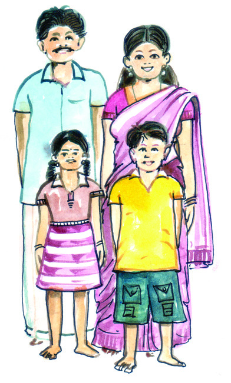
Social Science V
34
34
Social Science V
Have you examined the pictures?
They are the pictures of families in
different countries. Now it is clear
that, families exist all over the world
irrespective of nation, language etc.
So family is universal.
What are the factors that bind the members of a family
together?
•
Affection
•
Mutual respect
•
•
Emotional bond among the members in the family is another
important characteristic.
How many members are there in your family? A family will
always have a limited number of members that can be
accommodated in its house. This is another feature of a family.
Who does the following works at your home?
Sl. No.
Household works
Member of the family
1
Cooking
2
Gardening
3
Washing clothes
4
Shopping
5
Cleaning the courtyard
On the basis of the information filled above, it is clear that all
the members of the family take part in the household activities.
Page 35
Our Family
35
35
Our Family
This kind of joint efforts are very essential for the integrity of
the family. This sense of responsibility is an essential factor
for keeping the family a permanent unit.
The features of family are given in the column 'A'. Match them
with the items in column 'B'.
Functions of a family
What are your basic needs? Are they not food, cloth and
shelter? Usually all these needs are met by family. You love
your parents and they love
you too. This mutual love and
co-operation that exist among
the members of a family
mould the personality. Do
you now behave in the same
way as you were infants? An
individual's behaviour changes
as he grows older. We acquire
The function of a family is to
create an atmosphere of love and
care among its members.
Ogburn
A
Universal
Limited size
Emotional bonds
Sense of responsibility
Less number of members in a
family
Love, affection, feeling of
security
Carrying out duties
Beyond the boundaries of
nation and language
B
Page 36
Social Science V
36
36
Social Science V
the qualities such as discipline, manners, share and care,
honesty etc from our family.
Don't you wish to be at home when you fall ill? Of course,
you will. You will get the feeling of security at home than any
other place. Family ensures safety and provides us with the
feeling of security.
Functions
of family
Feeling of
Security
Love,
affection
Behaviour
Patterns
Basic
needs
Observe the picture above and write down the functions of a
family in the columns provided.
•
Namita is waiting for her school to reopen. Her father has
bought her study materials.
•
Despite being very busy, Minnu's mother prepared for
her the favourite dessert on her birthday.
Page 37
Our Family
37
37
Our Family
•
Grandfather constantly reminds us of the need for
respecting elders and being friendly towards others.
•
When Nisha met with an accident on her way to school,
the first thing she demanded was to take her home.
Summary
•
Family is the basic unit of society.
•
A family is formed by blood-relation, by marriage or by
adoption.
•
Based on the structure, family is divided into three -
Nuclear family, Extended family and Joint family.
•
The major features of a family are universality, emotional
bonds, limited size and sense of responsibility.
•
The important functions of a family are to ensure security
to its members, provide basic needs, give love and affection
and cultivate good qualities in them.
Significant learning outcomes
•
Explains that family is the basis of social relationships and
an important agency of personality development.
•
Identifies and Describe the different ways of formation of a
family.
•
Explains the characteristic features of family.
•
Identifies and Analyse the functions of family.
Page 38
Social Science V
38
38
Social Science V
Responsibilities of parents Your duties towards them
Extended activities
•
We have understood the functions of a family. Based on
the daily news, hold a discussion on how far the families
observe their roles in the present society.
•
Collect stories, poems and pictures that highlight and reveal
the importance of relationships in the family prepare a
magazine.
Let us assess
•
Ammu shares the day's events at school with her parents
on reaching home.
What do you usually share with your parents? Prepare a
brief note.
•
How do you help your parents at home?
•
How do your parents help you?
Complete the following table.
Page 39
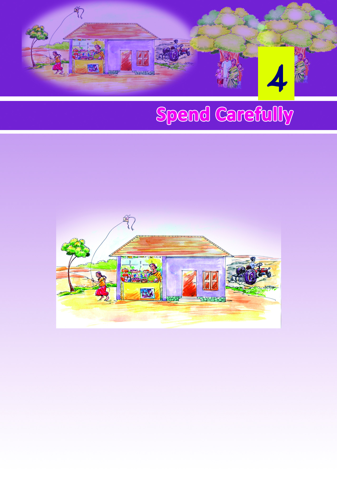
3939
Spend Carefully
Spend Carefully
We studied about family and its social importance in the last
chapter. Now let us see some other aspects related to family.
Examine the picture. You can see the members of this family -
father, mother and children - engaged in different activities.
What are they doing?
•
Father is ploughing the land using tractor
•
•
Who among the members of this family, are engaged in
income earning activities?
Page 40
4040
Social Science V
Social Science V
Family gets income by doing such different activities.
Employment is an economic activity that generates income.
Reward of employment is earned either in the form of wage
or salary. Employment is one source of income for family. As
income is generated in different ways, the sources of income
are also different.
Given below are some information about two families:
The sources of income are different for these two families.
Reward generating ventures or assets can be termed as sources
of income. For example, business is a source of income and
profit out of business is income.
Family 1
1. Agriculture
2. ..........................
Family 2
1. Tailoring
2. ..........................
Satheesh is an agricultural
labourer. His family consists of
his wife, two children and his
mother. He owns a house and
five cents of land. Satheesh's
wife, Sumathy, is engaged in
preparing meals in the nearby
school. His family gives
adequate care to his bedridden
mother.
Family 1
Shaji's family consists of his
wife and three children. He
runs a tailoring shop. His
elder son is engaged in
newspaper distribution.
Younger
children
are
students. His wife, Seena
does household activities.
They live in a rented house.
Family 2
What are the sources of income in the families of both Satheesh
and Shaji? Complete the table.